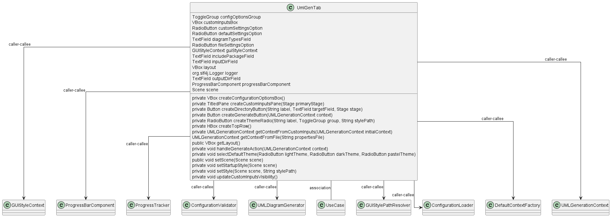

Class Diagram

Annotations
Relationships
| Type | Target | Details |
|---|---|---|
| CALLER_CALLEE | com.pjsoft.j2arch.gui.UmlGenTab | |
| CALLER_CALLEE | com.pjsoft.j2arch.gui.util.GUIStyleContext | |
| CALLER_CALLEE | com.pjsoft.j2arch.gui.ProgressBarComponent | |
| CALLER_CALLEE | com.pjsoft.j2arch.core.util.ProgressTracker | |
| CALLER_CALLEE | com.pjsoft.j2arch.core.util.ConfigurationValidator | |
| CALLER_CALLEE | com.pjsoft.j2arch.uml.UMLDiagramGenerator | |
| ASSOCIATION | com.pjsoft.j2arch.core.util.ProgressTracker.UseCase | Field: UML_DIAGRAM_GENERATION |
| CALLER_CALLEE | com.pjsoft.j2arch.core.util.GUIStylePathResolver | |
| CALLER_CALLEE | com.pjsoft.j2arch.config.ConfigurationLoader | |
| CALLER_CALLEE | com.pjsoft.j2arch.config.DefaultContextFactory | |
| CALLER_CALLEE | com.pjsoft.j2arch.uml.util.UMLGenerationContext |
Fields
| Visibility | Type | Name | Annotations | Description |
|---|---|---|---|---|
| private | ToggleGroup | configOptionsGroup | Description placeholder | |
| private | VBox | customInputsBox | Description placeholder | |
| private | RadioButton | customSettingsOption | Description placeholder | |
| private | RadioButton | defaultSettingsOption | Description placeholder | |
| private | TextField | diagramTypesField | Description placeholder | |
| private | RadioButton | fileSettingsOption | Description placeholder | |
| private | GUIStyleContext | guiStyleContext | Description placeholder | |
| private | TextField | includePackageField | Description placeholder | |
| private | TextField | inputDirField | Description placeholder | |
| private | VBox | layout | Description placeholder | |
| private | org.slf4j.Logger | logger | Description placeholder | |
| private | TextField | outputDirField | Description placeholder | |
| private | ProgressBarComponent | progressBarComponent | Description placeholder | |
| private | Scene | scene | Description placeholder |
Constructors
| Visibility | Name | Parameters | Annotations | Description |
|---|---|---|---|---|
| public | UmlGenTab | Stage primaryStage, GUIStyleContext guiStyleContext, UMLGenerationContext umlContext | Description placeholder |
Methods
| Visibility | Return Type | Name | Annotations | Description |
|---|---|---|---|---|
| private | VBox | createConfigurationOptionsBox() | Description placeholder | |
| private | TitledPane | createCustomInputsPane(Stage primaryStage) | Description placeholder | |
| private | Button | createDirectoryButton(String label, TextField targetField, Stage stage) | Description placeholder | |
| private | Button | createGenerateButton(UMLGenerationContext context) | Description placeholder | |
| private | RadioButton | createThemeRadio(String label, ToggleGroup group, String stylePath) | Description placeholder | |
| private | HBox | createTopRow() | Description placeholder | |
| private | UMLGenerationContext | getContextFromCustomInputs(UMLGenerationContext initialContext) | Description placeholder | |
| UMLGenerationContext | getContextFromFile(String propertiesFile) | Description placeholder | ||
| public | VBox | getLayout() | Description placeholder | |
| private | void | handleGenerateAction(UMLGenerationContext context) | Description placeholder | |
| private | void | selectDefaultTheme(RadioButton lightTheme, RadioButton darkTheme, RadioButton pastelTheme) | Description placeholder | |
| public | void | setScene(Scene scene) | Description placeholder | |
| private | void | setStartupStyle(Scene scene) | Description placeholder | |
| private | void | setStyle(Scene scene, String stylePath) | Description placeholder | |
| private | void | updateCustomInputsVisibility() | Description placeholder |